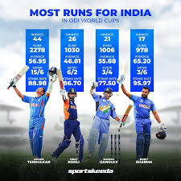
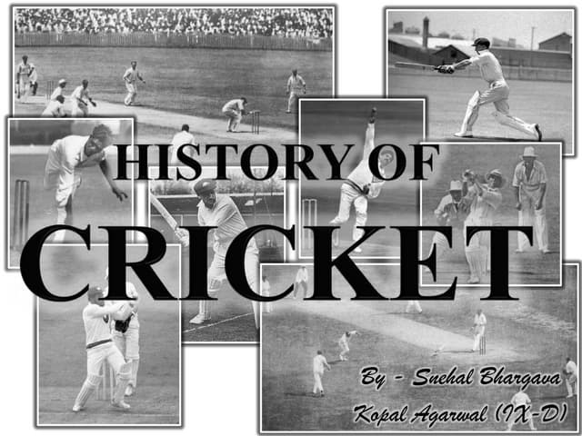
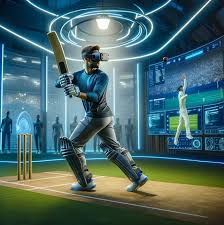

Cricket Blog - Your Ulitmate Guide to Cricket
Introduction to cricket
Cricket is a sport that has a rich history and is widely popular across the world, especially in countries like India, Australia, England, and South Africa. Played in formats like Test cricket, One-Day Internationals (ODIs), and Twenty20 (T20) cricket, it’s a game of strategy, skill, and passion.
Key Formats of Cricket
| Format |
Duration |
Overs Per Innings |
Teams |
Popular |
| Test Cricket |
5 Days |
Unlimited |
2 |
The Ashes, World test Championship |
| One Day (ODI) |
1 Day(50 Overs) |
50 |
2 |
ICC Cricket World Cup, Champions Tropy |
| T20 |
3 Hours |
20 |
2 |
ICC T20 World Cup,IPL |
Notale Cricket Players(Current & Past)
Here’s a quick look at some legendary players and their records across different formats:
| Player Name |
Country |
Format |
Matches Played |
Runs Scored |
Wickets Taken |
Notable Achivement |
| Sachin Tendulkar |
India |
Test |
200 |
15,921 |
- |
Most runs in Test cricket(15,921) |
| Virat Kohli |
India |
ODI |
262 |
12,000+ |
- |
Fastest to 8,000, 9,000, 10,000 ODI runs |
| Ricky Ponting |
Australia |
ODI |
375 |
13,704 |
- |
Most runs in ICC World Cups (1,400+) |
| Jacques Kallis |
South Africa |
Test |
166 |
10,000+ |
290+ |
Only player with over 10,000 runs and 290 wickets in Tests |
| Muttiah Muralitharan |
Sri Lanka |
Test |
133 |
1,100+ |
800+ |
Most wickets in Test cricket (800) |
Recent Cricket Tournament - ICC Men's Cricket World Cup 2023
The ICC Men's Cricket World Cup 2023 took place in India, with the best teams in the world battling for supremacy. Here's a quick summary of the tournament:
| Rank |
Team |
Matches Played |
Wins |
Losses |
Points |
Net Run Rate (NRR) |
Qualifivcation Status |
| 1 |
India |
9 |
8 |
1 |
16 |
+0.809 |
Qualified for Semis |
| 2 |
New Zealand |
9 |
7 |
2 |
14 |
+0.672 |
Qualified for Semis |
| 3 |
Australia |
9 |
6 |
3 |
12 |
+0.540 |
Qualified for Semis |
| 4 |
England |
9 |
5 |
4 |
10 |
+0.221 |
Qualified for Semis |
| 5 |
South Africa |
9 |
4 |
5 |
8 |
-0.145 |
Player of the Tournament (World Cup 2023)
The Player of the Tournament in the ICC Men's Cricket World Cup 2023 was Shubhman Gill of India. Here's a look at his statistics:
| Tournament |
Matches Played |
Runs Scored |
Average |
Strike Rate |
100s |
50s |
| 2023 World Cup |
9 |
721 |
80.11 |
89.44 |
2 |
3 |
Cricket Records

Cricket has a history of some incredible feats. Here are a few of the most notable records:
Most Runs in a Single ODI Match
| Player Name |
Runs Scored |
opponent |
Date |
Venue |
| Rohit Sharma |
264 |
sri lanka |
noc 13,2014 |
Eden Gardens, Kolkata |
Fastest Century in T20 Cricket
| Played name |
Balls Taken |
Opponent |
Date |
Venue |
| Chris Galye |
30 |
india |
mar 23,2016 |
World T20, imdia |
Cricket Glossary (Terms You Should Know)

- Bouncer: A delivery bowled short, rising toward the batsman’s head.
- Duck:When a batsman is dismissed without scoring any runs.
- Yorker: A delivery aimed at the batsman’s feet, usually difficult to hit.
- No-ball:A delivery that the umpire deems illegal, either due to overstepping or other infractions.
- Century: When a batsman scores 100 or more runs in a single innings.

- Conclusion
- Cricket is not just a sport, but a passion that unites millions of fans worldwide. Whether it's watching a thrilling T20 match, the drama of a Test series, or the excitement of the ODI World Cup, cricket continues to captivate audiences everywhere. Stay tuned for more updates, analysis, and insights right here on the blog!